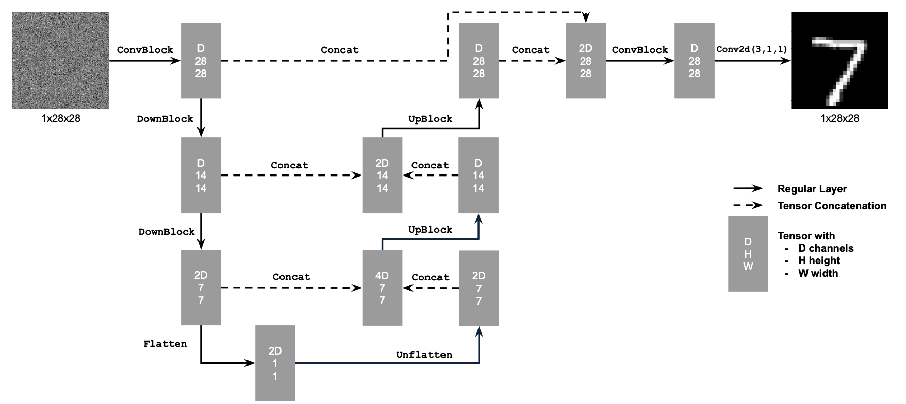

Fun With Diffusion Models!
James Smith, CS 280A, Fall 2024
Setup
Throughout this project we will be using the DeepFloyd/IF-I-XL-1.0 model. The model is a text-to-image model, but in order to save space in the notebook only the image part of the model is loaded, and some pre-computed text embeddings are used throughout the project (until later when we will generate some of our own embeddings). When generating noise for the model we use a seed value for consistency.
seed = 280
Here are 3 example images with their prompts generated from DeepFloyd with the given seed.
Forward Process
Diffusions models iteratively remove noise from images. In order to implement our own iterative denoiser, we first need to be able to generate images with noise in that at any point in the denoisinig process. We parameterize the process with a variable t, which can range from [0, 1000]. The value of t represents a percentage along a noise schedule, which is defined by the alpha variable representing a cumulative product of values in the schedule.
We sample this function at various values of t to show the noisey images at different parts of the process.


Classical Denoising
Eventually we will use the diffusion model to denoise these images, but first lets see how classic approaches fair. We convolve each image in the previous step with a gaussian filter to remove the high pass noise. We use a gaussian filter with kernel size of 5 to produce these results.
kernel_size = 5
We can see that although the image appearance is improved, it is impossible to complete remove the effect of noise using this approach.


One-Step Denoising
Another approach to removing the noise is to remove it in one shot using the diffusion model. We can estimate the noise using the first stage of the diffusion model and then subtract it from the original image.
We see from these results that the noise is fully removed, but some hallucinations are created, especially in the very noisy condition. Also the clarify of the noisiest image is a bit low.
Iterative Denoising
This model is actually trained on iteratively denoising, meaning that it isn't intended to do one-shot denoising as before. Given a noisy image, we can iteratively remove noise in small steps and slowly work our way to a noiseless image. This should improve the results. The function that controls this iterative denoising is given by:
Where x_0 is the estimated noiseless image at the given timestep (same as in the previous step), x_t is the image at timestep t, and v is the estimated variance, which is taken from the DeepFloyd model. The beta and alpha variables are defined by the schedule described above.
Now we iteratively denoise each image, and the results show that the final outputs are generally much higher in detail, but also contain quite a few more hallucinations. Comparing against all 3 attempts at denoising, the iterative denoiser produces the highest quality results.

Diffusion Model Sampling
Previous we looked at how to denoise an image. In this next part we will explore how the model can be used to generate images from scratch. Using the same iterative denoise process, and starting from t=0 with a completely noisy image, we give the model the following prompt:
"a high quality photo"
We sample the model 5 times to get a sense of the quality of image it can produce. We can see from these results that the samples are not that clear, they have quite a few artifacts and tend to contain very neutral tones.


Classifier-Free Guidance
To attempt to improve the results from the previous section we employ classifier free guidance. This approach works as follows. At a given timestep, generate an image with the null prompt. This attempts to compute noise given no direction from the text embedding. Then we compute noise using the text embedding. We amplify the text-embedding based noise by multiplying the distance from the embedding noise to the classless noise by a gamma value.
In this equation, e is the final estimated noise. e_u is the unclassified noise, and e_c is the classified noise.
gamma = 7
We generate 5 new samples using CFG with the same prompt as before
"a high quality photo"
The results show images with more detail and much more vibrant colors. Honestly this result kinda blows my mind.
Image-to-image Translation
Previously in the iterative denoise part, we added noise to a test image and denoised it to see the results. This allows us to hallucinate new parts of the image, essentially creating edits to the image with the noise. We explore this idea further by implementing the same approach but including CFG to allow the image to end up in significantly different places. We also test this at a number of differetn starting noise levels defined by the variable i_start, which is how many iterations into the denoising process we should begin. i_start=1 is a completely noisey image. Each iteration of the denoiser takes 30 steps, so a way to find the t values associated with these i_start values is:
t = (i_start - 1) * 30
These results show that as we denoise from noisier images, the process hallucinates more information. But there is a pattern we can observe as we blend from higher values of i_start, in that the form of the original image starts to appear about halfway through the samples. This is a really fascinating and useful result, allowing us to use other images as guides for the denoising process.
In this case we also use 2 additional images beyond the test images. Both of these images were taken in Lisbon, Portugal. One interesting thing to point out about the Santo Antonio image is that at i_start=7, it hallucinates a monument, at i_start=10, it hallucinates a person, and then at i_start=20 it goes back to the monument. It shows that the process is still quite random.

Web Images
We can also do this from images taken from the web. Here we use a sprite of Pikachu. I'm really obsessed with the dollar store pikachu from i_start=10

Hand-Drawn Images
We can also perform the process with hand-drawn images. We use these poorly drawn images of a sun and a boat, drawn by me. I think some of the really interesting cases are around i_start=3, i_start=5. Quite a large amount of these images are hallcunated, but they still follow the overall form and primarily use the colors from the drawing. This seems to be a sweet spot in terms of supporting interactions like "I want to sketch up something quickly and let the diffusion model do most of the work".
Inpainting
We can also use the same approach to fill holes in images created by masks. This is done by forcing all of the pixel values where the mask is black to the original image at ever step of the denoising. The result is that the model will generate new content for the mask that blends fairly well with the surrounding image.
For the test image, it kinda put a little statue of liberty lady on top of the campanile which I think is hilarious. My personal images are for a pot that I made in a pottery class that I haven't been able to decide what to put in it. I thought the model could help me come up with a good plant for it. The model decided to put a baby in there, and I don't think I will take it's advice. I also did this on the tail of a picture of a peacock that I took, and it seemed to hallucnate some kind of fox tail for the bird, which is pretty cool!


Text-Conditioned Image-to-image Translation
Instead of startin from "a high quality image", we can start from any prompt. The first example shows how a rocket ship is slowly morphed into the Campanile.
The second example is a picture I took of the lisbon skyline.
For this part, I generated my own prompt embeddings of "a picture of the beach" to see
if I could make the skyline blend into the beach. I think i_start=20 here is really fascinating, because the
white and black rocks on the beach match the skyline perfectly, and the castle on the hill turned into
trees.
The third example is from Pena Castle in Portugal. I thought it looked a bit like a mountain range, so
I generate another new embedding of "a lithograph of a mountain range". For these some
of my favorites start at 7 and 10, where the model chose to incorporate the colors of the castle and really
starts to emphasize the composition of the final image.

Visual Anagrams
In the next part, we implement the technique from the paper Visual Anagrams. This approach generates two images at each step of the process, each with an image flip transformation applied. Then the resulting noise is averaged before being subtracted, and so the model is steered by two constraints.
The result is that the image can have one meaning when viewed from one angle, and a different meaning when flipped.
Hybrid Images
A similar approach is employed in the Factorized Diffusion paper, but instead of image flipping, the two diffusion steps are taken at different frequencies. This creates images that have two different interpretations at different scale or viewing distance. On the left I've just scaled the identical image in order to make it easier to see the low pass prompt.
Training a Single-Step Denoising UNet
In the previous part of the project we used a pre-trained model. In this part of the project we explore training our own diffusion model. MNIST is a well studied and widely available dataset of hand written numbers. Our goal here is to train a model to produce hand written numbers using the MNIST dataset.
We start by training a model to do a single step of denoising. This is not actually a diffusion model (yet!) because it does not predict the noise in the image, it predicts a noiseless image. To do this we implement the following UNet model in pytorch.
Once the model is implemented, we can train the model by randomly sampling the MNIST dataset, adding a random amount of gaussian noise to the image, and training the model to predict the original image from the noisy image.
We train over the z and x pairs.
Given these pairs, we train the model from above using Mean Squared Error and an Adam Optimizer with learning rate = 0.0001. We use a batch size of 128 and train over 5 epochs.
Although this model was trained to predict the outputs for a noise value of 0.5, we can also see how it performs on noise data outside of that distribution. We observe that it actually performs ok for less noisy images, but for images that are more noisy, the results are quite bad. This is to be expected, because the model was not trained for these conditions.
Training a Diffusion Model
Now we can modify the existing process to create a diffusion model. First we construct a variance schedule, which we used before. These are the beta, alpha, and alpha_bar variables used in the first part of the project. We generate 300 beta values from 0.0001 to 0.02, alpha values are 1 - beta values, and alpha_bar is the cumulated product of the alpha values.
The goal when training this model is that instead of training it to predict the original image, we want it to denoise a given image by a small amount (based on the variance schedule). This will require modifications to the model architecture.
Time Conditioned UNet
We need to integrate the t value into the architecture. This is done by using a fully connected block to condition the model on the t variable.

One of the main differences in this new model is that we will use a new loss function that computes the error in the noise estimate. Given a sample from the MNIST dataset, we add noise to the sample and attempt to train the model to predict that noise using the following loss function.
We train using Mean Squared Error and an Adam Optimizer with learning rate = 0.0001. We use a batch size of 128 and train over 20 epochs.
Now that we have trained the model to predict noise, we need to implement a sample pass where we iteratively denoise to create a numeric image. This is similar to the Diffusion Model Sampling. Starting with noise, we have the model predict the noise, and then we subtract that noise slowly over 1000 steps.
Here we show the models ability to generate numbers at a number of different points in the training process.
For the most part, this model ends up at a point where it can draw numbers, even though some of them look a little scuffed.
Class Conditioned UNet
Similar to part 1 of the project, it would b enice to implement CFG to improve these results. It would also be nice to be able to ask the model for any specific number that we want, instead of getting random numbers every time. To do this we need to train the model using labels of the original MNIST dataset.
Using the same architecture from above, we further condition the model by integrating another fully connected layer composed of the labels into the model. We also implement CFG as part of the sampling process, described earlier in the report.
We train using Mean Squared Error over the same loss as the previous step, and an Adam Optimizer with learning rate = 0.001. We use a batch size of 128 and train over 20 epochs.
Final Thoughts
Although this project was very long and quite difficult at times, it's definitely the best project in this course. Prior to this my experience with TTI models was prompting them for images, but opening the hood and seeing how easy it is to control the iterative diffusion process has really given me a lot of ideas for future projects (and I want to base my final project on these principles). I commend the TAs and course staff for their efforts in putting this project together!